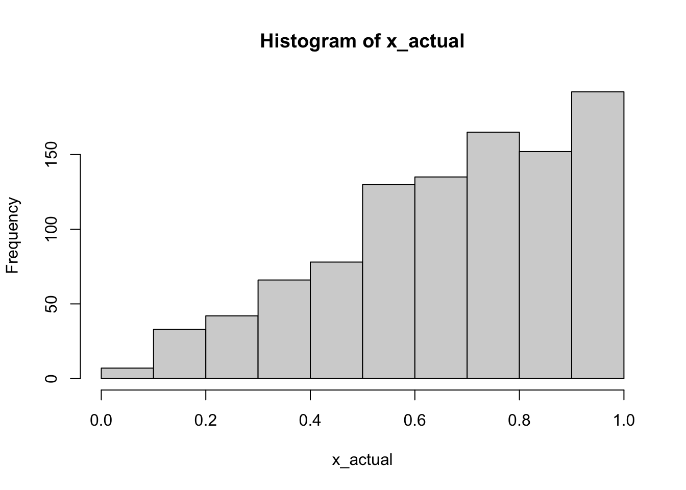

MATH-472: Class Notes
My running notes during MATH-472 lectures.
1/10/23
Summary
Overview of syllabus. Covered introduction to R.
Notes
- basic operators
+ / - * ^ = <-
- logical operators
- assignment (Dr. Ko prefers
<-) sum(),length(),c()- definition of functions
- if/then
1/12/23
Summary
More preamble. Should’ve skipped, no new material, painful.
Notes
Continuing where we left off. If/else statements.
ifelse()- you can do assignment inside of this (wild, seems inadvisible, but neat)
- e.g.
ifelse(1 > 2, x <- 1, x <- 0)
ex2 <- 76
ifelse(
ex2 >= 90, grade <- 'A',
ifelse(
ex2 >= 80, grade <- 'B',
ifelse(ex2 >= 70, grade <- 'C', '')
)
)[1] "C"- Arrays: used to store results of computations
- one dimension: vectors e.g.
x <- numeric(k)for a numeric vector of sizek - two dimensions: matrices
- \(A_{2 \times 3}\)
- e.g.
y <- matrix(0, nrow = m, ncol = n)for amxn0 matrix.
- more dimensions
- e.g.
l <- array(0, dim = c(m, n, ...))
- e.g.
- one dimension: vectors e.g.
- covered indexing with matrices using bracket notation
Loops
For loops
k <- 0
for (i in 1:10) {
k <- k + i
}
k[1] 55x <- 1:10
k <- 0
for (i in x) {
k <- k + x[i]
}
k[1] 55While loops
k <- 0
i <- 0
while (i <= 10) {
k <- k + i
i <- i + 1
}
k; i[1] 55[1] 11Practice, create a function that computes an average without using sum() or mean()
avg <- function(x) {
s <- 0
for (i in x) s <- s + i
s / i
}
x <- 1:10
avg(x) == 5.5[1] TRUEifelse() is vectorized, if is not
score <- c(76, 92, 83)
grade <- ifelse(
score >= 90, 'A',
ifelse(score >= 80, 'B',
ifelse(score >= 70, 'C')
)
)
grade[1] "C" "A" "B"# will fail-- length(score) > 1
# if (score >= 90) {
# grade <- 'A'
# } else if (score >= 80) {
# grade <- 'B'
# } else {
# grade <- 'C'
# }Note on statistical software
R adapted from S Plus.
Dr. Ko says this should be enough for us to cover the programming we’ll use this semester.
- recommends learning branching and loop syntax for adapting to other languages.
Textbook chapter 2, Probability and Statistics Review
- Random variable: assigns outcomes in a sample space \(\rightarrow\) Real numbers
- describes behavior of population elements
- Probability Density Function (pdf)
- \(f_X(x)\)
- Cumulative Distribution Function (cdf)
- \(F_X(x) \equiv P[X \leq x]\)
- non-decreasing function: \(x_1 < x_2 \iff F_X(x_1) \leq F_X(x_2)\)
- right-continuous: \(\lim_{\epsilon \to 0^{+}} F_X(x + \epsilon) = F_X(x), x \in \mathbb{R}\)
- \(\lim_{x \to \infty} F_X(x) = 1, \lim_{x \to -\infty} F_X(x) = 0\).
- CDFs for discrete functions are step functions.
1/17/23
- Absent
1/19/23
- Absent
1/24/23
Summary
Discussing MLE, analytical solutions vs. numerical solutions.
Notes
Review of analytical MLE is done in my notebook. Numerical estimation can be done using the mle() function, which is from the stats4 package. This approach is only possible if we know the definition of the negative-loglik function. Also, depending on the starting value, it may take time for mle() to produce an estimate.
What kind of search is mle() using? It depends on optim()… which uses an implementation of Nelder and Mead (1965).
library(stats4)
# y <- c(0.04304550, 0.50263474)
y <- 1:4
mlogl <- function(theta) -(length(y)*log(theta) - theta*sum(y))
fit <- mle(mlogl, 1.4)
summary(fit)Maximum likelihood estimation
Call:
mle(minuslogl = mlogl, start = 1.4)
Coefficients:
Estimate Std. Error
[1,] 0.4000004 0.1999989
-2 log L: 15.33033 1 / mean(y)[1] 0.41/26/23
Summary
Two parameter MLE, optim(), Inverse Transform Method
Notes
- data analysis: you have a sample
- need to infer population distribution function
- need to infer parameters of the distribution function
- together, you use them to
- MLE: used for parametric inference
- MLE requires sample to be random/iid (likelihood function is a joint probability distribution). What if it’s not?
- Today we’re looking at random number generation?
Two-parameter MLE
Suppose we have \(x_1, x_2, ..., x_n \sim Gamma(\lambda, r)\), with pdf \[ f(x; \lambda, r) = \begin{cases} \frac{\lambda}{\Gamma(r)} x^{r - 1} e^{-\lambda x} & x \geq 0, r > 0, \lambda > 0 \\ 0, & \text{otherwise} \end{cases}$ \]
Note: \[ \Gamma(r) = \int_0^\infty t^{r - 1} e^{-t}\ dt, t \geq 0. \]
For a positive real number \(r\), \(\Gamma(r + 1) = r \cdot \Gamma(r).\)
Note: \(n! = \Gamma(n + 1)\) because \(\Gamma(r + 1) = r \cdot \Gamma(r)\).
the optim() function for MLE with >1 parameter
x <- c(0.5928, 3.2048, 2.2281, 4.2292, 1.2096, 3.8371, 1.2670, 1.2042, 2.8182, 3.5173)
ll <- function(theta, sumx, sumlogx, n) {
r <- theta[1]
lambda <- theta[2]
-(n*r*log(lambda) - n*log(gamma(r)) + (r - 1)*sumlogx - lambda*sumx)
}
optim(c(20, 19), ll, sumx = sum(x), sumlogx = sum(log(x)), n = length(x))$par
[1] 3.161073 1.311199
$value
[1] 16.09232
$counts
function gradient
81 NA
$convergence
[1] 0
$message
NULL- even when estimating parameters numerically, you still need to be able to derive the log-likelihood function for the sample’s distribution (or assumed distribution)
Inverse Transform Method
- continuous random variables
- \(U\) is a uniform r.v. over \((a, b)\) if its pdf is \(f_U(u) = \frac{1}{b-1}, a < u < b \text{ and } 0 \text{ otherwise}.\)
- discrete random variables
1/31/23
Summary
More on the Inverse Transform Method.
Notes
# given an exponential distribution
lambda <- 10
exp_pdf <- function(x) lambda*exp(-lambda*x)
inv_exp <- function(u) -1/lambda * log(1 - u)
u <- runif(100000, 0, 1)
x <- inv_exp(u)
mean(x) # should be close to 1 / lambda[1] 0.09966128var(x) # should be close to 1 / lambda^2[1] 0.01001022Transformation of a discrete CDF via a quantile:
\(y_i\) is the random variable corresponding to \(u\) if \[ F_Y(y_{i - 1}) < u \leq F_Y(y_i), u \sim Uniform(0, 1) \]
# transformation given a discrete CDF, using quantiles
g <- function(n) {
u <- runif(n, 0, 1)
cdf <- c(0.1, 0.36, 0.42, 0.85, 1)
dplyr::case_when(
u <= cdf[1] ~ 0,
u > cdf[1] & u <= cdf[2] ~ 1,
u > cdf[2] & u <= cdf[3] ~ 2,
u > cdf[3] & u <= cdf[4] ~ 3,
u > cdf[4] & u <= cdf[5] ~ 4,
TRUE ~ NA_real_
)
}
p <- prop.table(table(g(10000)))
cumsum(p) 0 1 2 3 4
0.0945 0.3614 0.4230 0.8509 1.0000 2/2/2023
Summary
Process of computational methods, acceptance-rejection method
Notes
Process of computational methods
Estimate population distribution
Get point estimates of parameters
Simulate realizations from the population distribution
- These realizations can then be used to test statistical methods/tools, etc.
f <- function(x, p = 0.4) p * (1 - p)^xWhat if we can’t calculate a closed form of a CDF? Then, we can’t do a tidy inverse transform…
Acceptance-Rejection Method
We want realizations from a r.v. \(X\), with pdf \(f_X(x)\), but suppose it is hard to generate them. If we can find another pdf \(g_X(x)\)
which is defined on the same support of \(f_X(x)\)
from which it is easy to generate realizations,
and if we can find a constant \(c > 1\) such that
\[ h(x) = c \cdot g_X(x) \geq f_X(x) \]
or
\[ \frac{f_X(x)}{g_X(x)} \leq c, \]
then, we can generate a realization \(x\) from \(f_X(x)\) using the following algorithm:
- Generate a realization \(y\) from \(g_X(x)\).
- Generate a uniform random number \(u\) from \(U(0, 1)\).
- Set \(y\) to \(x\) if \(u < \frac{f_X(y)}{c\cdot g_X(y)}.\) Otherwise go back to step 1.
Then, \(x\) is a random number with the pdf \(f_X(x)\).
Probability that a point from step 1 is rejected is
\[ P(\text{A point generated from step 1 is rejected}) = \frac{\text{Area between } h(x) \text{and } f(x)}{\text{Area under } h(x)} \]
# demonstrate acception-rejection method using a Beta(2, 1) distribution
# g(x) = Uniform(0, 1)
f <- function(x) 2*x
g <- function(x) 1
C <- 2
gen_beta <- function() {
u1 <- runif(1, 0, 1)
u2 <- runif(1, 0, 1)
# if accepted,
r <- f(u1) / (C * g(u1))
out <- c( "r" = r, "u1" = u1, "u2" = u2)
if (u2 < f(u1) / (C * g(u1))) {
return(u1)
} else {
gen_beta()
}
}
x <- replicate(1000, gen_beta())
x_actual <- rbeta(1000, 2, 1)
hist(x)
hist(x_actual)
2/7/2022
Summary
Acceptance-rejection method for discrete random variables
Notes
Acceptance-rejection method for discrete random variables.
Let \(f_X(x) = \begin{cases} 0.16, x = 1 \\ 0.24, x = 2 \\ 0.33, x = 3 \\ 0.17, x = 4 \\ 0.10, x = 5 \\ 0, \text{ otherwise}. \end{cases}\) Assume we also have \(g_X(x) = \frac{1}{5}, x \in \{1, 2, 3, 4, 5\} \text{ and } 0 \text{ otherwise}.\)
f <- c(0.16, 0.24, 0.33, 0.17, 0.10)
g <- c(1, 1, 1, 1, 1) / 5
C <- max(f / g)
f_x <- function(x) {
dplyr::case_when(
x == 1 ~ 0.16,
x == 2 ~ 0.24,
x == 3 ~ 0.33,
x == 4 ~ 0.17,
x == 5 ~ 0.10,
TRUE ~ 0
)
}
gen <- function() {
y <- sample(1:5, 1) # draw 1 realization from discrete uniform
u <- runif(1, 0, 1) # draw 1 realization from continuous uniform
if (u <= f_x(y) / (C * 1/5)) {
return(y)
} else {
gen()
}
}
out <- replicate(1000, gen())
prop.table(table(out))out
1 2 3 4 5
0.148 0.243 0.334 0.174 0.101 2/9/2023
Summary
Covering random processes (counting processes, poisson processes, renewal processes).
Notes
- random processes depend on an index, often time
gen_poisson <- function(t0, lambda) {
s <- 0; i <- 0
while (s <= t0) {
u <- runif(1, 0, 1)
t <- -log(1 - u) / lambda # inverse transform to draw from Exp(lambda)
s <- s + t
i <- i + 1
}
return(i - 1)
}
gen_poisson(10, 2)[1] 17x <- replicate(1000, gen_poisson(8, 3))
hist(x)
2/21/23
Summary
Monte-Carlo Integration, rnorm(), qnorm(), etc.
Notes
We’ll get back the exam results this Thursday.
- We’ll have a chance to correct scores (if they’re really bad?)
We’re skipping chapter 5 (which covers data visualization), and move to chapter 6
Chapter 6 utilizes the process of generating random numbers (ch. 3), but we won’t use methods such as inverse-transform; we’ll use built-in methods from R
\(x_1, x_2, \cdots, x_n \sim Exp(\lambda)\)
\[ f_X(x) = \begin{cases} \lambda \cdot e^{-\lambda x} & x \geq 0, \lambda > 0 \\ 0 & \text{ otherwise.} \end{cases} \]
\(u \equiv F_X(x) = 1 - e^{-\lambda x}\) \(x \to -\frac{1}{\lambda}ln(1 - u)\)
lambda <- 3
n <- 10
x <- 1
p <- 0.7
rexp(n, lambda) # x_i ~ f(x) -- random draws [1] 0.16743738 0.11545642 0.77955957 0.19226185 0.92408510 1.19061335
[7] 0.06183609 1.14527279 0.56107668 0.13444328pexp(x, lambda) # P(X <= x) -- CDF, cumulative probability[1] 0.9502129dexp(x, lambda) # P(X == x)? -- density[1] 0.1493612qexp(p, lambda) # x* s.t. P(X <= x*) = p -- quantile[1] 0.4013243mu <- 5
sd <- 3
rnorm(1, mu, sd)[1] -0.1788599pnorm(5, mu, sd)[1] 0.5qnorm(0.75, mu, sd)[1] 7.023469- covering use of
set.seed()
Example. Suppose \(u \sim U(0, 1)\), and \[ F_u(u^*) \equiv P(U \leq u^*) = \int_0^{u^*} f_u(u)\ du = \int_0^{u^*} 1\ du = u^* \]
Demonstration of theorem, using \(punif()\).
punif(0.6, 0, 1)[1] 0.6Monte Carlo Integration
\[ \int_0^1 e^{-x}\ dx \]
In numerical integration (Simpson’s rule, midpoint rule, etc.), you can learn to integrate something like the above.
However, in statistics, we accomplish this by generating random numbers.
u <- runif(1000000, 0, 1)
mean(exp(-u))[1] 0.63195351 - exp(-1)[1] 0.6321206Monte Carlo integration relies on the Strong Law of Large Numbers.
Let \(g(x)\) be a function of random variable \(X\) with pdf \(f_X(x)\). Then let \[ \theta = E(g(X)) = \int_{-\infty}^{\infty} g(x)f_X(x)\ dx \]
If one has a random sample of size \(n\), \(x_1, x_2, \cdots, x_n\) from \(f_X(x)\), then \(\hat{\theta} = \sum_{i = 1}^{n} g(x_i) / n\) converges to \(\theta\) with probability 1 by the Strong Law of Large Numbers.
Example:
\[ \theta = E(g(X)) = \int_0^1 x\ dx = \int_0^1 x \cdot \frac{1}{1 - 0}\ dx = \frac{1}{2} \]
n1 <- 500
n2 <- 5000
u1 <- runif(n1, 0, 1)
u2 <- runif(n2, 0, 1)
# g(x) = x
mean(u1)[1] 0.4879659mean(u2)[1] 0.4989732\[ \theta = \int_a^b g(x)\ dx = (b - a) \cdot \int_a^b g(x) \cdot \frac{1}{b - a}\ dx \]
-exp(-5) - (-exp(-2))[1] 0.1285973u <- runif(1000, 2, 5)
(5 - 2) * mean(exp(-u))[1] 0.12994762/23/23
Summary
More on Monte-Carlo integration, discussion of why sample mean is preferred vs. other estimators wrt the law of large numbers.
Notes
turn in corrections to your exam to Dr. Ko’s office, by 12pm tomorrow.
Why do we like the sample mean (for estimating \(\mu\))?
- it uses the same formula! this is why the strong law of large numbers is powerful
- sample median won’t necessarily converge to population mean, e.g. when the population distribution isn’t symmetric
library(purrr)
mc_integrate <- function(g, a = 0, b = 1, n) {
u <- runif(n, a, b)
(b - a) * mean(g(u))
}
f <- function(x) exp(-x)
map_dbl(c(10, 100, 1000, 10000, 100000), ~mc_integrate(f, 2, 4, .))[1] 0.09562651 0.10850361 0.11208910 0.11700866 0.11717136# true value
exp(-2) - exp(-4)[1] 0.1170196h <- function(x) 10 * exp(-10 * x)
map_dbl(c(10, 1000, 1000000), ~mc_integrate(h, 0, 2, .))[1] 0.01468095 0.98138915 1.00302424# true value
integrate(h, 0, 2)1 with absolute error < 1.5e-07Currently, we’ve been checking the difference between our estimates and the true value. This is a measure of bias against true parameter values. However, we’ll discuss measurements of variance in a future class.
2/28/23
Summary
Notes
- Homework 3 assigned
- Exam corrections returned (I got 89%?)
\(Pr(0 \leq x \leq 5)\) where \[ f_X(x) = \begin{cases} 10 \cdot e^{-10x}, & x \geq 0 \\ 0, & \text{ otherwise} \end{cases} \]
f <- function(x) 10 * exp(-10 * x)
mc_integrate(f, 0, 5, 100000)[1] 1.009759cdf_exp_b <- function(x, lambda, n) {
u <- runif(n, 0, 1)
x * mean(lambda * exp(-lambda * x * u))
}
u <- cdf_exp_b(6, 20, 100)
l <- cdf_exp_b(2, 20, 100)
u - l[1] -0.5129175pexp(6, 1/20) - pexp(2, 1/20)[1] 0.1640192Example from class: write a function to generate a Z-table
# Compare results to textbook example 6.3
z_cdf <- function(x, n = 1000) {
u <- runif(n, 0, 1)
# density of Z ~ N(0, 1)?
theta <- function(x, u) {
mean(1 / sqrt(2 * pi) * x * exp((-x^2 * u^2) / 2))
}
# Z ~ N(0, 1) is symmetric about 0
if (x >= 0) {
0.5 + theta(x, u)
} else {
1 - 0.5 - theta(-x, u)
}
}
z_cdf(2, 100000)[1] 0.977421pnorm(2)[1] 0.97724993/2/23
Summary
- “Hit or Miss” approach to Monte Carlo Integration
Notes
Today: An easier way to generate CDFs for random variables?
“Hit or Miss” approach for Monte Carlo Integration.
Let \(f(x)\) be the pdf of a random variable \(X\). To estimate \(F(x) = \int_{-\infty}^x f(t)\ dt\) is
- Generate a random sample \(X_1, X_2, \cdots, X_m\) from \(f(x)\).
- For each \(X_i\), compute \(g(x) = I(X_i \leq x) = \begin{cases} 1, & X_i \leq x \\ 0, & X_i > x\end{cases}\).
- Compute \(\hat{F}(x) = \bar{g(X)} = \frac{1}{m} \sum_{i = 1}^m I(X_i \leq x)\) as an estimate of \(F(x)\).
Note: \(\hat{F}(x)\) is called the empirical distribution of \(F(x)\).
Why does this work?
\(E(x) = 1 \cdot P(X \leq x) + 0 \cdot p(X > x) = P(X \leq x) = F(x)\).
# the "Hit-or-Miss" method:
# step 1.
x <- rnorm(10000)
# step 2. (an indicator function)
i <- x <= 1.96
# step 3.
mean(i)[1] 0.9797norm_cdf <- function(x, n = 10000, mu = 0, sigma = 1) {
X <- rnorm(n, mu, sigma)
i <- X <= x
mean(i)
}
exp_cdf <- function(x, n = 10000, lambda = 5) {
X <- rexp(n, lambda)
i <- X <= x
mean(i)
}
exp_cdf(7.6, n = 1000, lambda = 5)[1] 1pexp(7.6, 5)[1] 1beta_cdf <- function(x, n = 10000, a = 2, b = 3) {
X <- rbeta(n, a, b)
i <- X <= x
mean(i)
}
beta_cdf(0.7, a = 2, b = 3)[1] 0.9208pbeta(0.7, 2, 3)[1] 0.9163How do we choose between competing estimates for parameters \(\hat{\theta}\)?
Say we have \(\hat{\theta_1}\) and \(\hat{\theta_2}\) as estimators (?) of \(\theta\). We care about:
- Unbiasedness: if \(E(\hat{\theta}) = \theta\), then \(\hat{\theta}\) is an unbiased estimate.
- Minimum Variance: if \(Var(\hat{\theta_1}) < Var(\hat{\theta_2})\), we would prefer \(\hat{\theta_1}\), other properties being equivalent.
Developed estimators should satisfy these properties.
“Uniformly Most powerful Variance among Unbiased Estimates”: “UMVUE”.
Papers can be published based on whether a new estimator has less variance than an existing estimator.
How do we compare the variance of an estimator? Samples of samples.
# compare hit or miss vs. simple monte-carlo
# theta_1 is simple monte-carlo
# theta_2 is indicator
# estimating F_Z(1.96) where Z ~ N(0, 1).
# generate 100 estimates of theta_1 and theta_2 (n = 10,000)
# then, take the variance of each
# for theta_1
z_cdf <- function(x, n = 1000) {
u <- runif(n, 0, 1)
# density of Z ~ N(0, 1)?
theta <- function(x, u) {
mean(1 / sqrt(2 * pi) * x * exp((-x^2 * u^2) / 2))
}
# Z ~ N(0, 1) is symmetric about 0
if (x >= 0) {
0.5 + theta(x, u)
} else {
1 - 0.5 - theta(-x, u)
}
}
# for theta_2
z_cdf2 <- function(x, n = 1000, mu = 0, sigma = 1) {
X <- rnorm(n, mu, sigma)
i <- X <= x
mean(i)
}
# wrap the 2 functions, and collect results
comparison <- function(x = 1.96, n = 100) {
t1 <- numeric(n)
t2 <- numeric(n)
for (i in 1:n) {
t1[i] <- z_cdf(x)
t2[i] <- z_cdf2(x)
}
c(theta1 = var(t1), theta2 = var(t2))
}
comparison() theta1 theta2
3.999127e-05 2.826263e-05 - According to Dr. Ko, three flavors of journals in statistics:
- theoretical journals
- simulation-based journals
- applied journals?
3/7/2023
Summary
Variance reduction methods, the Antithetic Variable Method
Notes
Suppose our goal is to estimate a parameter \(\theta\). Could be population mean, median, variance, etc.
Point Estimation: use sample data to calculate a single estimate \(\hat{\theta}\) of the population value.
If you have competing estimators, we would choose the one that satisfies the following two criteria:
- \(E(\hat{\theta}) = \theta\); unbiasedness
- Minimum variance
This is called a Uniformly Minimum Variance Estimate among Unbiased Estimates: UMVUE.
We can apply Monte-Carlo integration to competing estimators to determine which among them have the lowest variance. We demonstrated this in the last class with the Normal CDF.
Antithetic Variable Method
Suppose we have two random variables \(X\) and \(Y\). Then, \(Var(aX \pm bY) = a^2 \cdot Var(X) + b^2 \cdot Var(Y) \pm 2 \cdot a \cdot b \cdot Cov(X, Y)\) where \(a\) and \(b\) are numbers, and \(Cov(X, Y) = E(XY) - E(X) \cdot E(Y)\).
Ex. \(Var(2X + 0.5Y)\)
We have shown that \[ \frac{1}{m}\sum_{i=1}^n g(u_i) \leftarrow \theta = \int_a^b g(x)\ dx \]
by the law of large numbers.
Now, let \(a = b = \frac{1}{2}\), and thus \[ Var(\frac{X + Y}{2}) = Var(\frac{1}{2}X + \frac{1}{2}Y) = (\frac{1}{2})^2Var(X) + (\frac{1}{2})^2Var(Y) + 2 \cdot \frac{1}{2} \cdot \frac{1}{2} \cdot Cov(X, Y) \]
Then, let \(u_1, u_2 \sim U(0, 1)\) and consider a function \(h(\cdot).\)
- if \(u_1 \perp u_2\), then \(h(u_1) \perp h(u_2)\) and \[ Var\Bigl(\frac{h(u_1) + h(u_2)}{2} \Bigr) = \frac{1}{4}(Var(h(u_1)) + Var(h(u_2))) \]
u <- runif(1000)
v <- 1 - u
# Cov(u, v) < 0!
cov(u, v)[1] -0.08566134Comparison between simple monte-carlo and antithetic variable approach.
norm_cdf_anti <- function(x, n) {
u <- runif(n / 2)
v <- 1 - u
y <- c(u, v)
pos_cdf <- (1 / sqrt(2 * pi)) * abs(x) * exp(-x^2 * y^2 / 2) + 0.5
if (x >= 0) {
cdf <- pos_cdf
} else {
cdf <- 1 - pos_cdf
}
return(mean(cdf))
}
norm_cdf <- function(x, n) {
u <- runif(n)
pos_cdf <- (1 / sqrt(2 * pi)) * abs(x) * exp(-x^2 * u^2 / 2) + 0.5
if (x >= 0) {
cdf <- pos_cdf
} else {
cdf <- 1 - pos_cdf
}
return(mean(cdf))
}
s <- numeric(100)
a <- numeric(100)
for (i in 1:100) {
s[i] <- norm_cdf(1.96, 100)
a[i] <- norm_cdf_anti(1.96, 100)
}
var(s)[1] 0.0005521252var(a)[1] 1.982865e-06Control Variate Method
Let \(\theta = E(g(X))\). An estimate of \(\theta\) by control variate method \(\hat{\theta}_c\) can be obtained by
finding a function \(l(x)\) of a random variable such that (i) \(\mu = E(l(x))\) is known and (ii) \(l(x)\) is correlated with \(g(x)\) and
setting \(\hat{\theta}_c = g(x) + c[l(x) - \mu]\).
Note that the random variable \(l(x)\) is called a control variate and does not need to be a pdf. It is just a function of \(x\).
So, how do we find \(c\)?
\[ \min_c Var(\hat{\theta}_c) = \min_c Var(1 \cdot g(x) + c \cdot [l(x) - \mu]) \]
3/9/2023
Summary
More on the control variate method.
Notes
- Homework 3 is due on 3/16 (next Thursday)
Question from last class: why are we able to use the SLLN with the antithetic variable method? Aren’t we violating the assumption of i.i.d. draws used for estimation?
Standard Monte Carlo:
\(u_1, u_2, u_3, u_4 \sim U(0, 1)\)
\(\hat{\theta}_4 = \frac{1}{4} \sum_{i = 1}^4 g(u_i)\)
Antithetic Variable Method:
- \(u_1, u_2 \sim U(0, 1); u_3 = 1 - u_1, u_4 = 1 - u_2.\)
- Note that \(Cov(u_1, u_3) < 0\) and \(Cov(u_2, u_4) < 0.\)
- We then estimate a new sample mean
\[\begin{align*} \theta \leftarrow \frac{1}{4} \sum_{i = 1}^4 g(u_i) &= \frac{g(u_1) + g(u_2) + g(u_3) + g(u_4)}{4} \\ &= \frac{g(u_1) + g(1 - u_1) + g(u_2) + g(1 - u_2)}{4} \\ \\ &= \frac{\frac{g(u_1) + g(1 - u_2)}{2} + \frac{g(u_2) + g(1 - u_2)}{2}}{2} \\ &= \frac{1}{2} \sum_{i = 1}^2 g^*(u_i). \end{align*}\]
So, you end up with half the number of realizations, but \(\frac{g(u_1) + g(1 - u_2)}{2}\) and \(\frac{g(u_2) + g(1 - u_2)}{2}\) are independent from each other. So, for estimation, they constitute independent and identical draws, and thus we can rely on the SLLN to know that our estimate of \(\theta\) converges to the true value as the number of realizations used increases.
Control Variate Method
Picking up where we left off.
\[ \min_c Var(\hat{\theta}_c) = \min_c Var(1 \cdot g(x) + c \cdot [l(x) - \mu]) \]
We assume \(\mu\), the mean of \(l(x)\) is known. In practice, we can estimate it empirically from simulated data?
Note that \(Var(X + a) = Var(X)\)
\[\begin{align*} \min_c Var(\hat{\theta}_c) &= \min_c Var(1 \cdot g(x) + c \cdot [l(x) - \mu]) \\ &\implies \min_c 1 \cdot Var(g(x)) + c^2 \cdot Var[l(x) - \mu] + 2 \cdot 1 \cdot c \cdot Cov(g(x), l(x)) \\ &\implies \min_c Var(l(x) - \mu) \cdot c^2 + 2 \cdot Cov(g(x), l(x)) \cdot c + Var(g(x)) \\ &\implies \frac{d}{dc} \Biggl[ Var(l(x) - \mu) \cdot c^2 + 2 \cdot Cov(g(x), l(x)) \cdot c + Var(g(x)) \Biggr] \equiv 0 \\ &\implies 2 \cdot Var(l(x) - \mu) \cdot c^* + 2 \cdot Cov(g(x), l(x)) \equiv 0 \\ &\implies c^* = -\frac{Cov(g(x), l(x))}{Var(l(x))} \end{align*}\]
Is \(c^*\) the minimum? Yes: \[ \frac{d^2}{dc^2} Var(\hat{\theta}_c) \Big|_{c = c^*} > 0. \]
Variance is always positive by definition, so we know that the value found for \(c^*\) is the minimum.
\[ c^* = -\frac{Cov(g(x), l(x))}{Var(l(x))} \]
Example:
\[ \theta = E(e^u) = \int_0^1 e^u\ du \]
So \(g(u) = e^u.\) First, we need a candidate for \(l(x)\).
How about \(l(u) = u\) where \(u \sim U(0, 1).\) So, \(E(U) = 0.5\) and \(Var(U) = \frac{1}{12}\).
We solved for these values in Homework 1.
Then \[ \hat{\theta}_c = e^u + c \cdot [u - \frac{1}{2}] \] where \[ c = -\frac{Cov(e^u, u)}{Var(u)} = -0.1409 / (1/12). \]
u <- runif(100)
C <- -cov(exp(u), u) / var(u)
C[1] -1.707418-0.1409 / (1/12)[1] -1.6908Trying on our own:
Estimate \(\theta = \int_0^1 e^{-x} / (1 + x^2)\ dx\) using the control variate method with \(l(x) = e^{-0.5} / (1 + x^2)\) and an emperical value of \(c^*\).
g <- function(x) exp(-x) / (1 + x^2)
l <- function(x) exp(-0.5) / (1 + x^2)
# estimating C
u <- runif(10000)
C <- -cov(g(u), l(u)) / var(l(u))
# simple monte-carlo vs. control variate
u <- runif(1000)
smc <- mean(g(u))
hat <- mean(g(u) + C * (l(u) - mean(l(u))))
integrate(g, 0, 1)0.5247971 with absolute error < 5.8e-15print(smc)[1] 0.538403print(hat)[1] 0.538403print(var(g(u)))[1] 0.05989671print(var(g(u) + C * (l(u) - mean(l(u)))))[1] 0.0029970463/14/23
Summary
Importance sampling. Should refer to Dr. Ko’s notes and finish this section.
Notes
See example 6.7.
Let \(x_1, x_2, \cdots, x_n \sim (\mu, \sigma^2)\)
\[ Var(\bar{X}) = Var(\frac{1}{n} \sum_{i = 1}^n x_i) = Var(\frac{1}{n}x_1 + \frac{1}{n}x_2 + \cdots + \frac{1}{n}x_n) = \]
Better to use \(Var(g(x_i)) / n\)? rather than \(Var(\hat{\theta}_1, \hat{\theta}_2, \cdots, \hat{\theta}_m).\)
n <- 10000
u <- runif(n)
# u1, u2, ..., u10k --> e^u1, e^u2, ... e^u10k
hat_theta <- mean(exp(u))
est_var <- var(exp(u))
hat_theta <- numeric(100)
for (i in 1:100) {
u <- runif(10000)
hat_theta[i] <- mean(exp(u))
}
var(hat_theta)[1] 2.413377e-05Dr. Ko: once you’ve taken MATH-462, you should be able to study new topics in statistics on your own.
Importance Sampling
\[ \theta = \int_0^1 g(x)\ dx \]
Simple Monte-Carlo
- Generate \(u_1, u_2, ..., u_n \sim U(0, 1)\)
- \(\hat{\theta} = \frac{1}{n} \sum_{i=1}^n g(u_i)\)
Importance sampling
- Generate \(x_1, x_2, ..., x_n \sim f_X(x)\)
- \(\hat{\theta} \leftarrow \frac{1}{n} \sum_{i = 1}^n (g(xi) / f(xi))\)
Here, \(f(x)\) is known as an importance function; it is a PDF. We need it to be easy to generate numbers from the importance function. Note a key assumption: \(f(x) > 0\) wherever \(g(x) > 0\). That is, support of \(f(x)\) is not necessarily the same as that of \(g(x)\).
Let \(\theta = \int g(x)dx\) and \(X\) be a random variable with pdf \(f(x)\) such that \(f(x) > 0\) on the set \(\{x: g(x) > 0 \}\).
…
How to pick \(f(X)\)?
- $Var(_I) =
# Example 6.11
x <- seq(0, 1, 0.01)
g <- exp(-x) / (1 + x^2)
f3 <- exp(-x) / (1 - exp(-1))
plot(x, g, type = "l", ylim = c(0, 2))
lines(x, f3, lty = 3)